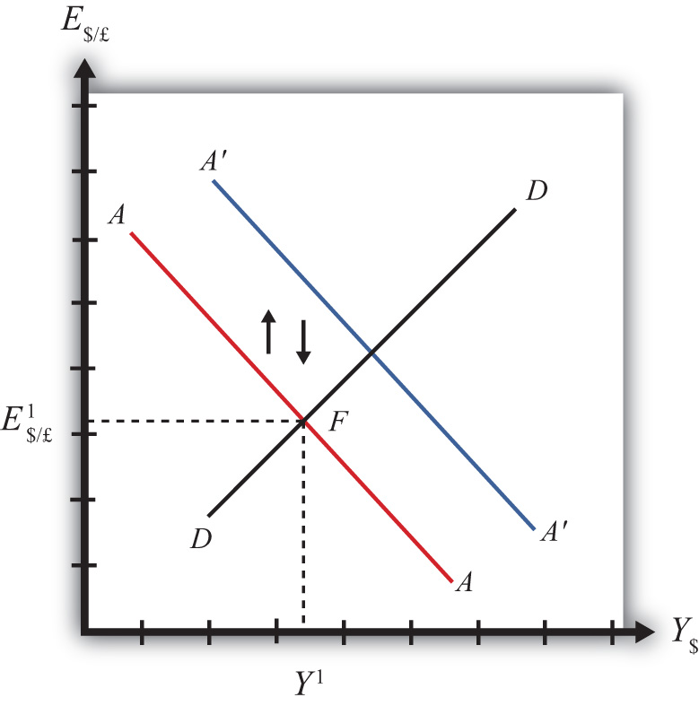

In a pure floating exchange rate system, the exchange rate is determined as the rate that equalizes private market demand for a currency with private market supply. The central bank has no necessary role to play in the determination of a pure floating exchange rate. Nonetheless, sometimes central banks desire or are pressured by external groups to take actions (i.e., intervene) to either raise or lower the exchange rate in a floating exchange system. When central banks do intervene on a semiregular basis, the system is sometimes referred to as a “dirty float.” There are several reasons such interventions occur.
The first reason central banks intervene is to stabilize fluctuations in the exchange rate. International trade and investment decisions are much more difficult to make if the exchange rate value is changing rapidly. Whether a trade deal or international investment is good or bad often depends on the value of the exchange rate that will prevail at some point in the future. (See Chapter 15 "Foreign Exchange Markets and Rates of Return", Section 15.3 "Calculating Rate of Returns on International Investments" for a discussion of how future exchange rates affect returns on international investments.) If the exchange rate changes rapidly, up or down, traders and investors will become more uncertain about the profitability of trades and investments and will likely reduce their international activities. As a consequence, international traders and investors tend to prefer more stable exchange rates and will often pressure governments and central banks to intervene in the foreign exchange (Forex) market whenever the exchange rate changes too rapidly.
The second reason central banks intervene is to reverse the growth in the country’s trade deficit. Trade deficits (or current account deficits) can rise rapidly if a country’s exchange rate appreciates significantly. A higher currency value will make foreign goods and services (G&S) relatively cheaper, stimulating imports, while domestic goods will seem relatively more expensive to foreigners, thus reducing exports. This means a rising currency value can lead to a rising trade deficit. If that trade deficit is viewed as a problem for the economy, the central bank may be pressured to intervene to reduce the value of the currency in the Forex market and thereby reverse the rising trade deficit.
There are two methods central banks can use to affect the exchange rate. The indirect method is to change the domestic money supply. The direct method is to intervene directly in the foreign exchange market by buying or selling currency.
The central bank can use an indirect method to raise or lower the exchange rate through domestic money supply changes. As was shown in Chapter 21 "Policy Effects with Floating Exchange Rates", Section 21.2 "Monetary Policy with Floating Exchange Rates", increases in the domestic U.S. money supply will cause an increase in E$/£, or a dollar depreciation. Similarly, a decrease in the money supply will cause a dollar appreciation.
Despite relatively quick adjustments in assets markets, this type of intervention must traverse from open market operations to changes in domestic money supply, domestic interest rates, and exchange rates due to new rates of returns. Thus this method may take several weeks or more for the effect on exchange rates to be realized.
A second problem with this method is that to affect the exchange rate the central bank must change the domestic interest rate. Most of the time, central banks use interest rates to maintain stability in domestic markets. If the domestic economy is growing rapidly and inflation is beginning to rise, the central bank may lower the money supply to raise interest rates and help slow down the economy. If the economy is growing too slowly, the central bank may raise the money supply to lower interest rates and help spur domestic expansion. Thus to change the exchange rate using the indirect method, the central bank may need to change interest rates away from what it views as appropriate for domestic concerns at the moment. (Below we’ll discuss the method central banks use to avoid this dilemma.)
The most obvious and direct way for central banks to intervene and affect the exchange rate is to enter the private Forex market directly by buying or selling domestic currency. There are two possible transactions.
First, the central bank can sell domestic currency (let’s use dollars) in exchange for a foreign currency (say, pounds). This transaction will raise the supply of dollars on the Forex (also raising the demand for pounds), causing a reduction in the value of the dollar and thus a dollar depreciation. Of course, when the dollar depreciates in value, the pound appreciates in value with respect to the dollar. Since the central bank is the ultimate source of all dollars (it can effectively print an unlimited amount), it can flood the Forex market with as many dollars as it desires. Thus the central bank’s power to reduce the dollar value by direct intervention in the Forex is virtually unlimited.
If instead, the central bank wishes to raise the value of the dollar, it will have to reverse the transaction described above. Instead of selling dollars, it will need to buy dollars in exchange for pounds. The increased demand for dollars on the Forex by the central bank will raise the value of the dollar, thus causing a dollar appreciation. At the same time, the increased supply of pounds on the Forex explains why the pound will depreciate with respect to the dollar.
The ability of a central bank to raise the value of its currency through direct Forex interventions is limited, however. In order for the U.S. Federal Reserve Bank (or the Fed) to buy dollars in exchange for pounds, it must have a stockpile of pound currency (or other pound assets) available to exchange. Such holdings of foreign assets by a central bank are called foreign exchange reservesHoldings of foreign assets by a country’s central bank. Usually held in the form of foreign government Treasury bonds.. Foreign exchange reserves are typically accumulated over time and held in case an intervention is desired. In the end, the degree to which the Fed can raise the dollar value with respect to the pound through direct Forex intervention will depend on the size of its pound denominated foreign exchange reserves.
There is a secondary indirect effect that occurs when a central bank intervenes in the Forex market. Suppose the Fed sells dollars in exchange for pounds in the private Forex. This transaction involves a purchase of foreign assets (pounds) in exchange for U.S. currency. Since the Fed is the ultimate source of dollar currency, these dollars used in the transaction will enter into circulation in the economy in precisely the same way as new dollars enter when the Fed buys a Treasury bill on the open market. The only difference is that with an open market operation, the Fed purchases a domestic asset, while in the Forex intervention it buys a foreign asset. But both are assets all the same and both are paid for with newly created money. Thus when the Fed buys pounds and sells dollars on the Forex, there will be an increase in the U.S. money supply.
The higher U.S. money supply will lower U.S. interest rates, reduce the rate of return on U.S. assets as viewed by international investors, and result in a depreciation of the dollar. The direction of this indirect effect is the same as the direct effect.
In contrast, if the Fed were to buy dollars and sell pounds on the Forex, there will be a decrease in the U.S. money supply. The lower U.S. money supply will raise U.S. interest rates, increase the rate of return on U.S. assets as viewed by international investors, and result in an appreciation of the dollar.
The only difference between the direct and indirect effects is the timing and sustainability. The direct effect will occur immediately with central bank intervention since the Fed will be affecting today’s supply of dollars or pounds on the Forex. The indirect effect, working through money supply and interest rates, may take several days or weeks. The sustainability of the direct versus indirect effects is discussed next when we introduce the idea of a sterilized Forex intervention.
There are many times in which a central bank either wants or is pressured to affect the exchange rate value by intervening directly in the foreign exchange market. However, as shown above, direct Forex interventions will change the domestic money supply. A change in the money supply will affect the average interest rate in the short run and the price level, and hence the inflation rate, in the long run. Because central banks are generally entrusted to maintain domestic price stability or to assist in maintaining appropriate interest rates, a low unemployment rate, and GDP growth, Forex intervention will often interfere with one or more of their other goals.
For example, if the central bank believes that current interest rates should be raised slowly during the next several months to slow the growth of the economy and prevent a resurgence of inflation, then a Forex intervention to lower the value of the domestic currency would result in increases in the money supply and a decrease in interest rates, precisely the opposite of what the central bank wants to achieve. Conflicts such as this one are typical and usually result in a central bank choosing to sterilize its Forex interventions.
The intended purpose of a sterilized intervention is to cause a change in the exchange rate while at the same time leaving the money supply and hence interest rates unaffected. As we will see, the intended purpose is unlikely to be realized in practice.
A sterilized foreign exchange intervention occurs when a central bank counters direct intervention in the Forex with a simultaneous offsetting transaction in the domestic bond market. For example, suppose the U.S. Fed decides to intervene to lower the value of the U.S. dollar. This would require the Fed to sell dollars and buy foreign currency on the Forex. Sterilization, in this case, involves a Fed open market operation in which it sells Treasury bonds (T-bonds) at the same time and in the same value as the dollar sale in the Forex market. For example, if the Fed intervenes and sells $10 million on the Forex, sterilization means it will also sell $10 million of Treasury bonds on the domestic open market at the same time.
Consider the effects of a sterilized Forex intervention by the U.S. Fed shown in the adjoining AA-DD diagram, Figure 21.5 "Sterilization in the AA-DD Model". Suppose the economy is initially in equilibrium at point F with GDP (Y1) and exchange rate (E$/£1). Now, suppose the Fed intervenes in the Forex by selling dollars and buying British pounds. The direct effect on the exchange rate is not represented in the AA-DD diagram. The only way it can have an effect is through the increase in the money supply, which will shift the AA curve up from AA to A′A′. However, sterilization means the Fed will simultaneously conduct an offsetting open market operation, in this case selling Treasury bonds equal in value to the Forex sales. The sale of T-bonds will lower the U.S. money supply, causing an immediate shift of the AA curve back from A′A′ to AA. In fact, because the two actions take place on the same day or within the same week at least, the AA curve does not really shift out at all. Instead, a sterilized Forex intervention maintains the U.S. money supply and thus achieves the Fed’s objective of maintaining interest rates.
Figure 21.5 Sterilization in the AA-DD Model
However, because there is no shift in the AA or DD curves, the equilibrium in the economy will never move away from point F. This implies that a sterilized Forex intervention not only will not affect GNP, but also will not affect the exchange rate. This suggests the impossibility of the Fed’s overall objective to lower the dollar value while maintaining interest rates.
Empirical studies of the effects of sterilized Forex interventions tend to support the results of this simple model. In other words, real-world sterilizations have generally been ineffective in achieving any lasting effect upon a country’s currency value.
However, there are several reasons why sterilized interventions may be somewhat effective nonetheless. Temporary effects are certainly possible. If a central bank makes a substantial intervention in the Forex over a short period, this will certainly change the supply or demand of currency and have an immediate effect on the exchange rate on those days.
A more lasting impact can occur if the intervention leads investors to change their expectations about the future. This could happen if investors are not sure whether the central bank is sterilizing its interventions. Knowing that sterilization is occurring would require a careful observation of several markets unless the Fed announces its policy. However, rather than announcing a sterilized intervention, a central bank that wants to affect expectations should announce the Forex intervention while hiding its offsetting open market operation. In this way, investors may be fooled into thinking that the Forex intervention will lower the future dollar value and thus may adjust their expectations.
If investors are fooled, they will raise E$/£e in anticipation of the future dollar depreciation. The increase in E$/£e will shift the AA curve upward, resulting in an increase in GNP and a depreciation of the dollar. In this way, sterilized interventions may have a more lasting effect on the exchange rate. However, the magnitude of the exchange rate change in this case—if it occurs—will certainly be less than that achieved with a nonsterilized intervention.
Jeopardy Questions. As in the popular television game show, you are given an answer to a question and you must respond with the question. For example, if the answer is “a tax on imports,” then the correct question is “What is a tariff?”